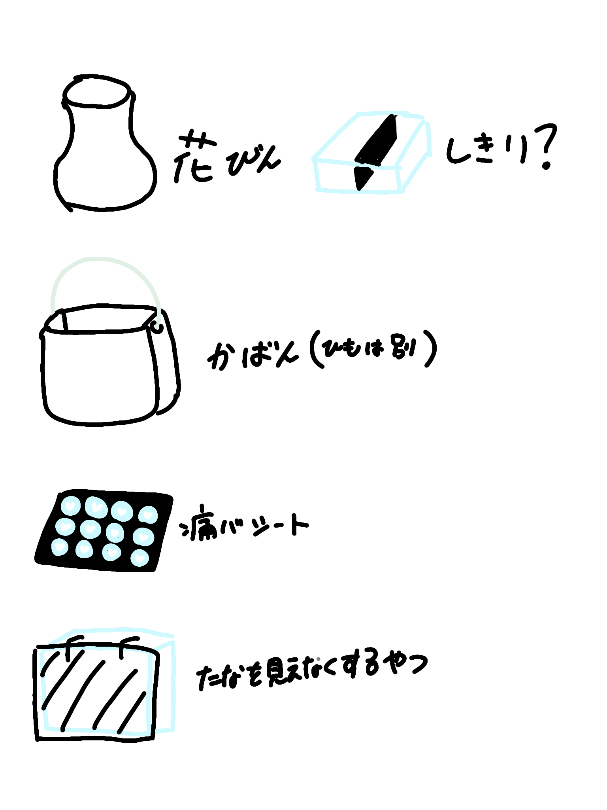

みなとみらい２１地区は脱炭素先行地域 ２０３０年までが目標である。
熱供給がある地域である 資源循環推進等に取り組む
国から補助金がもらえてそれで太陽光パネルなどを設置している。
再生可能エネルギーを増やす取り組みを増やしていった
でもビルが多くて影が多くて、、、、
→ほかの横浜の町に置いたりした。
あとは充電器など、LED
みなとみらいサーキュラーシティプロジェクト
横浜市と民間事業が連携できるようにする。大都市の参考になるように
質と量の確保が大変 赤字にならないやつが大事
纏まった量、纏まって回収するのが効率もいいしコストも抑えられる
なのでみなとみらいでもみんなでやりましょうねとなっている
SAF＝飛行機の燃料にする。料理などで使い終わった油を集めてそれを燃料でつかう。
ポップコーンがビールに。規格外品なども回収してビールにした。
ーーーーーーーーーーーーーーーーーーーーーーーーーーーーーーーーー
クリアファイルの再生へ
リサイクルが手元にかえってくるように
品質のテストをしてこれできるよ！と企業に思って思われるようにしたい。
ーーーーーーーーーーーーーーーーーーーーーーーーーーーー
クリアファイルのペレット
廃棄物を扱うのに許可が必要 それはどのフェーズも当てはまる
回収して細かくなってペレットになるので法律の許可が必要。
しかし、ペレットは廃棄物ではなく原材料だよねとなっているのでセーフだよね
無料不用品回収トラックは本来許可が必要。
温室効果ガス対策
燃やしている ８割を占めている 極力燃やしたくないよ
プラスチックの海洋問題。プラスチックに関する計画が増えた。
クリアファイルがペレットになるまで
横浜市では実践的に研究を目的とするなら許可なしでいいよとしている。
でも条件がある量と期限は最小限である。
・再生ペレット×３ｄプリンター
・クリアファイルそのもののリサイクル
色付きのクリアファイルは適さない。でもプリントされたものでなにができれば。アイデアや考えが重視
誰がどう使うのか。エピソードまで。つながりがうまれるか。
